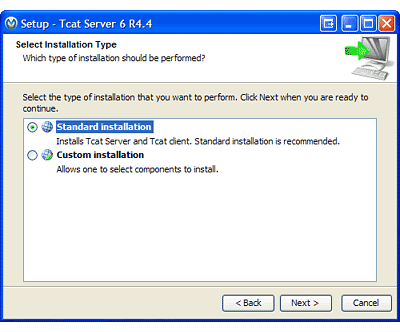
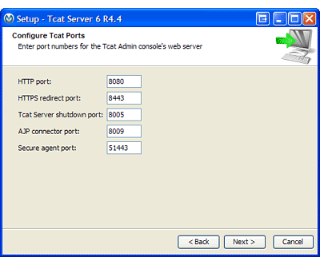
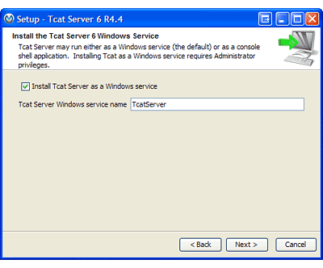
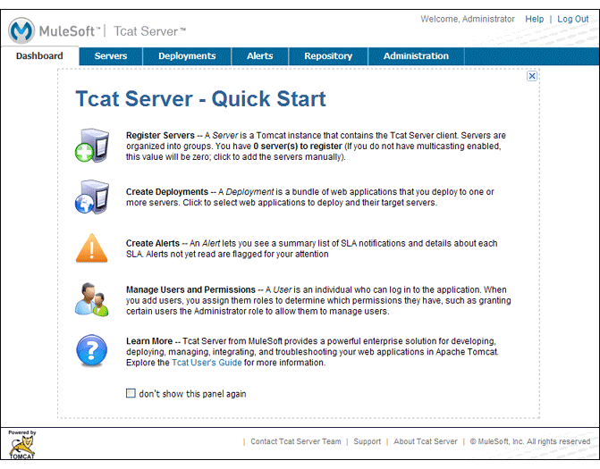

Installing Tcat Server on Microsoft Windows
This document describes how to install MuleSoft Tcat Server on the Microsoft Windows operating system. A basic installation using the Windows installer is described below, followed by advanced installations in text-only and unattended modes. In addition, this document describes how to start and stop Tcat Server, access the Tcat console, and provides advanced configuration and security steps.
|
For additional information and to install Tcat Server on other operating systems, see:
You can send comments or questions to: tcat-install@mulesoft.com |
Microsoft Windows Operating Systems Supported
Tcat Server has been tested and is supported on the following Microsoft Windows operating systems:
-
Windows XP
-
Windows Vista
-
Windows Server 2003
-
Windows Server 2008
-
Windows Server 2012
-
Windows 7
For additional operating systems supported, see:
Required Software
Tcat Server requires the Java SE Runtime Environment (JRE). You may download Tcat Server with a bundled version of JRE if you do not already have one installed. However, it is strongly recommended that you install the Java SE Developers Kit (JDK). JDK includes JRE and provides additional important utilities such as keytool.
JRE/JDK Versions Supported
Tcat Server has been tested and is known to work with the following versions of JRE and JDK for Microsoft Windows:
-
Oracle/Sun JRE or JDK version 1.6 or later (any build newer than 1.6.0_04). If you are only running the Tcat Server agent, and not the Tcat console, Oracle/Sun JRE or JDK version 5 (all builds) also works.
-
Oracle/JRockit version 1.6.0_20 or newer JDK (Tcat v6.4.1 and older console logs tab shows zero logs)
-
IBM J9 version 1.6.0 or newer JDK or JRE (this works with Tcat Server v6.4.2 and newer)
To determine the version of Oracle/Sun JRE installed on your computer, open a Command Prompt window and type java -version.
The following Java Runtimes have also been tested but are known to not work, and are unsupported:
-
Oracle JDK or JRE version 7, releases earlier than update 2 (due to HotSpot loop optimization bugs)
-
Oracle/Sun JDK or JRE versions 1.6.0_03 or older (due to JAXB any 1.6.0 Oracle/Sun Hotspot JVM older than 1.6.0_04 won’t work)
-
IBM J9 1.5.0 JDK and JRE (due to lack of support for self-signed HTTPS client certificates)
Setting the JAVA_HOME environment variable
If you wish to use your own installed JRE or JDK and not the bundled version included with Tcat Server, an environment variable must be manually set. Tcat Server first looks for an installed JDK with the JAVA_HOME environment variable. If it doesn’t find a JDK, it looks for a JRE with the JRE_HOME environment variable. If it finds neither, it defaults to using its own bundled JRE.
Follow these steps to set JAVA_HOME or JRE_HOME:
-
Open System Properties from the Windows Control Panel.
-
Click Advanced > Environmental Variables.
-
Click New below the System Variables window.
-
In the Variable name form field, enter JAVA_HOME if you have an installed JDK (preferred) or JRE_HOME if you have an installed JRE.
-
In the Variable value form field, enter the location of your JDK or JRE directory.
-
Click OK to save the new system variable.
-
Click OK to close the Environment Variables dialog box.
-
Click OK to close System Properties.
Installing Tcat Server
You need to know the default credentials to access the Tcat Server dashboard once installation is complete. Both the username and password default to "admin" as detailed below.
Download Tcat Server for Windows
Download the latest Tcat Server release by going to the Tcat Overview Page and clicking Download.
Installation with the Windows Installer
Follow these steps for a Tcat Server installation using the Windows installer. All defaults may be chosen for an initial installation. However, custom ports, installation directory and a service instance name can be customized by changing the defaults as shown below. Later, when installing additional Tcat Server instance on one or more remote computers, the Tcat console need not be installed.
-
Download Tcat Server from the link above.
-
Close all programs on your desktop.
-
Run the installer. The welcome screen appears in a few moments, click Next, and accept the license agreement.
-
Choose a Standard Installation to install both Tcat Server and the Tcat console. Choose Custom Installation if you wish to only install Tcat Server on a remote computer that is administered by your primary installation. You can also choose to optionally install Apache Tomcat documentation.
 -
After choosing the directory for installation, the next screen allows you to configure ports. Ports can also be later changed in the
conf\server.xmlandconf\Catalina\localhost\agent.propertiesfiles. -
The next screen allows you to choose whether Tcat Server is installed as a Windows service; it can also be installed as a console shell application but you to manually start it after the server reboots.
 -
After choosing the default Start Menu Folder, the installation starts and takes several minutes to complete.
-
Start Tcat Server by going to the Start Menu, selecting All Programs, then selecting "Start Tcat Server 6" in the Tcat Server 6 program group.
-
Open a web browser and navigate to: http://localhost:8080/console
-
Log in with "admin" for both the username and password.
The Tcat Server dashboard launches in your web browser.
Your next steps after launching the Tcat dashboard include registering a server in the console, and then adding a new web application to the server instance. See the Working with Servers guide for additional steps in these procedures.
Upgrade Installation
If you are upgrading from a previous release of Tcat Server, see Upgrading to Tcat Server 6 R4 and follow the upgrade instructions provided in this document.
Advanced Installations
Advanced installations allow users to install Tcat Server with non-default options, and also allow for text-based and unattended installations. These installation options are outlined in this section.
Headless (Text-Based) Installation
This section describes how to install Tcat Server in a "headless" (text-only) mode. This mode of installation allows users to first specify installation options including the installation directory, the server ports, and more. After answering these questions in the shell, the installer begins an unattended installation. The headless installation also allows users to automate multiple installs in a non-interactive mode as detailed below.
Attended Headless Installation
To begin the headless installation, open a Command Prompt window and navigate to the directory where Tcat Server was downloaded, then type the following at the prompt (using your downloaded filename as it may differ from this):
C:\> start \wait tcat-installer-6.4.4-windows-64bit.exe -c
The installer’s interaction in the Command Prompt window looks similar to this:
# start \wait tcat-installer-6.4.4-windows-64bit.exe -c
This installs Tcat Server 6 on your computer.
OK [o, Enter], Cancel [c]
Read the following License Agreement. You must accept the terms of this agreement before continuing with the installation.
...
I accept the agreement
Yes [1], No [2]
1
Which type of installation should be performed?
Standard installation [1, Enter]
Custom installation [2]
1
Where should Tcat Server 6 be installed?
[c:\TcatServer6]
...Unattended Headless Installation
Several options are available for an unattended headless installation:
-
Default Installation
If you wish to install Tcat Server with all default options, use the -q argument instead of -c. This installs the software in its default location ofc:\TcatServer6including both Tcat Server and the Tcat console. It also uses all default port numbers, which can later be changed in theconf\server.xmlandconf\Catalina\localhost\agent.propertiesfiles.The command for a default installation is (check that you are using your downloaded filename):
C:\> start tcat-installer-6.4.4-windows-64bit.exe -q -console
If you wish for no output to be shown, remove the argument
-console -
Installation with an External Options File
An options file can be produced and referenced during the headless installation. If the installer has already been run, then a default option fileresponse.varfilealready exists in the.install4jdirectory within your installation directory. It is best to copy and modify this file and use it for future installations. Otherwise, the following code can be copied into a new text file, and customized for your use if necessary. It can then be used as the installation option file when installing Tcat Server version 6.4.4. The contents of this varfile is in the same format as a simple Java properties file:#install4j response file for Tcat Server 6 R4.4 sys.installationDir=c\:\\TcatServer6 sys.languageId=en sys.programGroup.linkDir=/usr/local/bin sys.programGroup.name=Tcat Server 6 [TcatServer] tomcatHttpsPort$Long=8443 tomcatShutdownPort$Long=8005 tcatWindowsServiceInstall$Boolean=true sys.programGroup.enabled$Boolean=true tcatServiceName=TcatServer tomcatAjpPort$Long=8009 sys.programGroup.allUsers$Boolean=true tomcatHttpPort$Long=8080 secureAgentPort$Long=51443 sys.installationTypeId=39 sys.component.37$Boolean=true sys.component.51$Boolean=true sys.component.52$Boolean=true sys.component.53$Boolean=true sys.component.54$Boolean=trueAfter producing the above options file, and naming it
response.varfile, execute the following command in the Command Prompt window to start installation (using your downloaded filename):C:\> start tcat-installer-6.4.4-windows-64bit.exe -q -console -varfile response.varfile
The
-q -consolearguments are optional but without them, no output is shown in the Command Prompt window. They need to be present as the first and second arguments as shown above to take effect.To also display debugging information about the installation in the Command Prompt window, use the following command to start installation:
C:\> start tcat-installer-6.4.4-windows-64bit.exe -q -console -Dinstall4j.debug=true -Dinstall4j.detailStdout=true -varfile response.varfile
Adding Tcat Server Capabilities to an Existing Apache Tomcat Installation
Tcat Server capabilities can be added to an existing Apache Tomcat installation. All Tomcat 5.5.x and newer releases, and all Tomcat 6.0.x and 7.0.x releases are supported. See Add Tcat Server Capabilities to an Existing Tomcat Install for installation instructions.
Installing Multiple Tcat Instances on a Single Computer
Multiple instances of Tcat Server can be run on a single machine. One instance (or more) of the Tcat console allows users to manage all the additional Tcat Server instances, each running in their own Java Virtual Machine (JVM). For more information, see Installing Multiple Tcat Instances on a Single Machine.
Starting and Stopping Tcat Server
|
If you want to use the standard Tomcat |
If you installed Tcat Server with the Windows installer, a program group "Tcat Server 6" was created in your Windows Start menu. This program group includes commands to start, stop and restart Tcat Server. It also provides a direct link to the Tcat console.
In addition, the following commands are also available from the Command Prompt. To execute these commands, navigate to the bin directory under your Tcat Server installation directory (with a default installation, this would be located at c:\TcatServer6\bin).
| Action | Command |
|---|---|
Start Tcat Server |
|
Stop Tcat Server |
|
Restart Tcat Server |
|
Obtain the server’s status and process ID |
|
As a next step, you may wish to start the Tcat console as detailed in the following section.
Starting the Tcat Console
The Tcat console is an administration console for managing and monitoring Tomcat instances. To run the Tcat console on a local installation, enter http://localhost:8080/console in your web browser. If the server is remote or you changed the default port, replace localhost:8080 with the correct server name and port where the console is deployed.
You can now select and register one or more of the unregistered servers, adding them to server groups as needed. For more details, see Working with Servers.
Advanced Options and Security
This section details a few important advanced options. For more information about configuring Tcat Server, please see the Administration Guide.
Make Contents of Webapps Directory Unwriteable
By default, the Tcat console enables a user to edit files on any Tcat Server instance registered to it. For additional security, you may wish to make the Webapps directory unwriteable.
This property is set in the spring-services.xml file located in the webapps/agent/WEB-INF/ directory. Below is the relevent snippet:
<property name="writeExcludes">
<list>
<value>lib/catalina*.jar</value>
<value>**/tomcat*.jar</value>
<value>conf/tcat-overrides.conf</value>
<!-- block the webapps directory -->
<!-- <value>webapps/**</value> -->
</list>
</property>To disable this ability, take the following steps:
-
Uncomment the last element in the above snipper, replacing this:
<!-- <value>webapps/**</value> -->With this:
<value>webapps/**</value> -
Save the file.
-
Restart Tcat Server instance.
Modifying JAVA_OPTS
You may wish to modify the JAVA_OPTS environment variable for several reasons:
-
To enable JMX so that you obtain more detailed information about connectors and server status, for example:
-Dcom.sun.management.jmxremote
-
To increase memory settings because you are installing all the components offered in the installer, for example:
-Xmx512M -XX:PermSize=64M -XX:MaxPermSize=128M
-
To modify the secure port, for example:
-Dtcat.securePort=51444
You can modify JAVA_OPTS after installing Tcat Server using the Tcat console. This can be done in two ways:
-
Manually setting the options on each server by modifying the server’s environment variables
-
Or by modifying the options in the server profile that you use across multiple Tcat Server instances. This requires administration privileges.
Uninstalling Tcat Server
The following options uninstall Tcat Server:
-
For a Tcat Server installation via the Windows installer, choose Uninstall Tcat Server from the Tcat Server 6 group in the Windows Start menu.
-
If Tcat Server and Tomcat were manually installed in the same directory, and you want to delete both programs, simply delete the entire folder.
-
If Tcat Server was manually installed on an existing Tomcat installation, delete the console, agent webapps and their folders from the webapps directory.